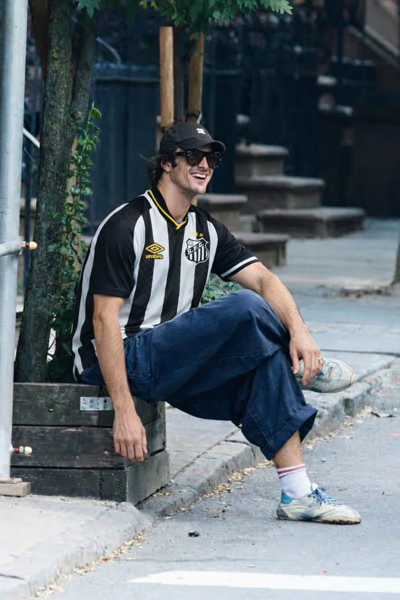

Astro de Hollywood, ator Jacob Elordi é flagrado usando camisa do Santos
Ator foi visto utilizando a camisa do clube brasileiro após sair de um set de filmagens
Publicado em 2026 • Redação Geek News

O ator Jacob Elordi, conhecido mundialmente por seus papéis em produções de Hollywood, chamou a atenção de fãs brasileiros após ser visto usando a camisa do Santos. O momento foi registrado por pessoas que estavam próximas ao ator enquanto ele deixava um set de filmagens.
Fotos do artista utilizando o uniforme do clube paulista começaram a circular rapidamente nas redes sociais.
Segundo relatos de pessoas que estavam no local, Elordi demonstrou simpatia ao perceber que estava sendo reconhecido por alguns fãs. Mesmo sem falar muito sobre o assunto, o ator teria reagido de forma descontraída ao notar os comentários sobre a camisa do time brasileiro.
O Santos é um dos clubes mais tradicionais do futebol brasileiro e ficou mundialmente conhecido por revelar grandes jogadores da história do esporte, como Pelé e Neymar. Por isso, ver um ator internacional utilizando a camisa do clube acabou chamando ainda mais atenção nas redes.
Elordi é fã do Brasil e já contou em podcasts sua admiração por futebol. Nas redes sociais, fãs começaram a brincar com a situação e criar memes sobre o ator ter se tornado "mais um torcedor santista". Alguns usuários também comentaram que o astro "jogaria melhor que qualquer um dos pernas de pau do time hoje".
Essa não foi a primeira vez que o astro esteve relacionado com o time. No ano passado, Jacob disse em entrevista que "é muito fã do clube". Ele afirmou que conhece o craque Neymar e já participou de uma de suas festas.
O astro ainda afirmou seu ódio pelo jogador Santista Gabriel Barbosa, conhecido popularmente como Gabigol. "Não suporto esse cara, ele é ruim demais" afirmou Elordi na entrevista.
Jacob ainda prometeu que "Um dia" assistiria a um jogo do Santos na vila belmiro. O ator afirmou ter comprado "muito dorflex" para conseguir assistir a um jogo do Santos.
O episódio rapidamente se transformou em um assunto popular entre fãs de cinema, séries e futebol. A combinação entre cultura pop e esporte acabou gerando grande repercussão nas redes sociais brasileiras.
← Voltar ao Portal